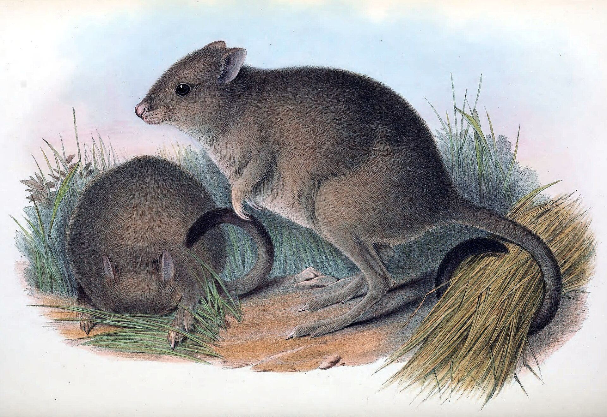
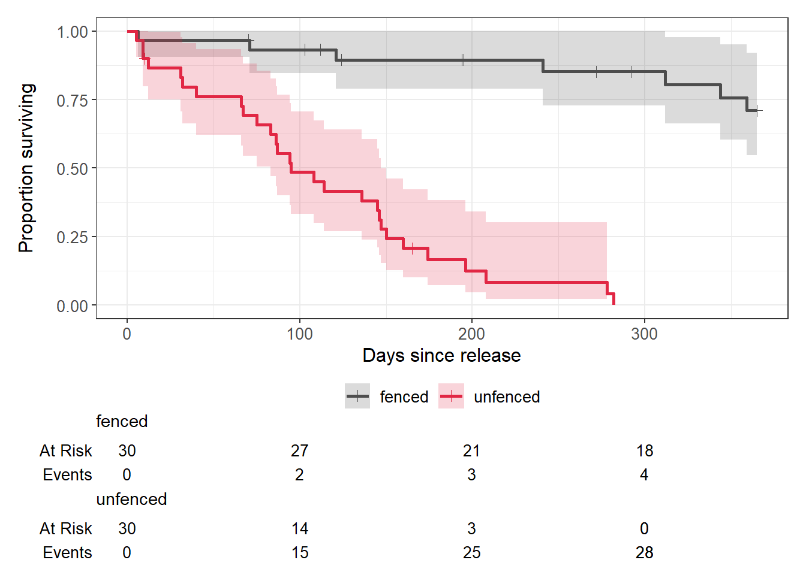
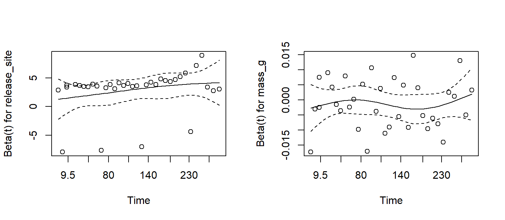

Week 13: Time-to-event data, censoring, Kaplan–Meier curves and Cox models
How long does a translocated animal survive? How many days until a seed germinates, a plant flowers, or an insect is knocked down by heat? These are time-to-event questions. They need their own methods, because in almost every study some individuals have not had the event by the time the study ends.
This week you will learn survival analysis, which handles this properly. Workshop materials are available in the GitHub repository ECS200.
TipLearning outcomes
By the end of this workshop you should be able to:
Explain what censoring is and why it rules out a t-test or logistic regression.
Estimate and plot survival curves with the Kaplan–Meier method.
Compare survival between groups with a log-rank test and a Cox proportional hazards model.
Interpret hazard ratios, check the proportional hazards assumption and write up the results.
We use survival, which comes installed with R, for the models, and ggsurvfit to draw survival curves with ggplot2.
Code
# Week 13 workshop - Survival analysis# Written by Nicholas Wu, 1234578, 20/05/2027# install.packages("ggsurvfit") # run once in the console if neededlibrary(tidyverse) # data import, wrangling and plottinglibrary(survival) # survival models (installed with R)library(ggsurvfit) # survival curves with ggplot2# setwd("C:/Users/YOUR-NAME/Documents/ECS200")
Study context

Woylie or brush-tailed bettong (Bettongia ogilbyi) illustration by H. C. Richter in Gould’s Mammals of Australia, 1863.
The woylie (brush-tailed bettong, Bettongia penicillata) is a critically endangered marsupial from south-west Western Australia. Predation by introduced foxes and cats is a major threat, so woylies are often translocated into predator-proof fenced reserves. Translocations outside fences can establish wider populations, but only if enough animals survive.
Sixty woylies were radio-collared and released, 30 inside a fenced reserve and 30 in an unfenced reserve with predator baiting. Each animal was tracked for up to 365 days. For each woylie, the data record:
days: days from release until death, or until tracking stopped;
status: 1 = the woylie died during the study; 0 = the woylie was still alive when tracking stopped (the study ended, or its collar failed);
release_site (fenced or unfenced) and body mass at release (mass_g).
Question: Does survival differ between fenced and unfenced release sites?
# How many deaths (status = 1) and censored animals (status = 0) per site?woylie_data %>% dplyr::count(release_site, status)
# A tibble: 4 × 3
release_site status n
<fct> <dbl> <int>
1 fenced 0 23
2 fenced 1 7
3 unfenced 0 2
4 unfenced 1 28
1. Background
Censoring
Most woylies released inside the fence were still alive after 365 days. We know they survived at least 365 days, but not how long they would actually live. Their survival time is censored. A collar that fails on day 200 also gives a censored time: the animal was alive on day 200, and after that we do not know.
Censored observations contain real information, so they must not be thrown away or treated as deaths:
Approach
Problem
t-test on days
Censored animals lived longer than recorded, so the mean is underestimated, most of all in the group that survives best
Drop the censored animals
Removes the survivors, which makes survival look worse than it is
Logistic regression on dead/alive
Ignores when animals died. Dying on day 5 and on day 360 count the same, and animals followed for different lengths of time are not comparable
Survival curves, the log-rank test and the Cox model
The survival function\(S(t)\) is the probability of surviving beyond time t. It starts at 1 and steps down every time an animal dies.
The Kaplan–Meier method estimates \(S(t)\) from data with censoring. At each death, the proportion surviving is multiplied by (1 − deaths / number still at risk). Censored animals count as “at risk” until the day they are censored, and then they leave the calculation. They are not counted as deaths.
The log-rank test compares survival curves between groups (H0: the curves are the same).
The Cox proportional hazards model is the regression model for survival data. It models the hazard (the instantaneous risk of death at any moment) and can include several predictors, numeric or categorical:
\(e^{\beta}\) is the hazard ratio (HR). HR = 2 means twice the risk of dying at any moment, HR = 0.5 means half the risk, and HR = 1 means no effect. The model assumes the hazard ratio stays the same throughout the study: the proportional hazards assumption.
Use the app to see how survival curves, censoring and sample size interact.
sv_data = {const r =rng(1313+ sv_seed);const make = (median) => {const t =rexp(r, sv_n,Math.log(2) / median);return {times: t.map((v) =>Math.min(Math.ceil(v), sv_end)),status: t.map((v) => (v <= sv_end ?1:0))}; };const A =make(sv_medA), B =make(sv_medB);const kmA =kaplanMeier(A.times, A.status), kmB =kaplanMeier(B.times, B.status);const steps = [...kmA.steps.map((d) => ({...d,group:"fenced"})), {time: sv_end,surv: kmA.steps.at(-1).surv,group:"fenced"},...kmB.steps.map((d) => ({...d,group:"unfenced"})), {time: sv_end,surv: kmB.steps.at(-1).surv,group:"unfenced"} ];const cens = [...kmA.censored.map((d) => ({...d,group:"fenced"})),...kmB.censored.map((d) => ({...d,group:"unfenced"}))];const lr =logrank(A.times, A.status, B.times, B.status);const ncens = A.status.filter((s) => s ===0).length+ B.status.filter((s) => s ===0).length;return {steps, cens, lr, ncens};}Plot.plot({width:560,height:320,marginLeft:50,x: {label:"Days since release",domain: [0,365]},y: {label:"Proportion surviving",domain: [0,1],grid:true},color: {domain: ["fenced","unfenced"],range: [grey, red],legend:true},marks: [ Plot.line(sv_data.steps, {x:"time",y:"surv",stroke:"group",curve:"step-after",strokeWidth:2.5}), Plot.dot(sv_data.cens, {x:"time",y:"surv",stroke:"group",symbol:"plus",r:5}), Plot.ruleX([sv_end], {stroke: dark,strokeDasharray:"4,3"}) ]})
Code
html`<div class="app-verdict">Log-rank test: χ² = <b>${fmt(sv_data.lr.chisq)}</b>, <i>p</i> <b>${fmtp(sv_data.lr.p)}</b>.<b>${sv_data.ncens}</b> of ${2* sv_n} animals were censored (+ symbols), i.e. still alive when the study ended (dashed line).Shorten the study and watch how many observations become censored and how much harder it is to detect a difference.</div>`
2. Visualise
The response in a survival analysis is a pair of columns, time and status, combined with survival::Surv(). The + signs printed below mark censored times.
Code
# Time and status combined into one "survival" responsehead(survival::Surv(woylie_data$days, woylie_data$status), 10)
[1] 195+ 359 365+ 272+ 365+ 6 365+ 365+ 194+ 124+
Plot the Kaplan–Meier curves for each release site. ggsurvfit::survfit2() estimates the curves, and ggsurvfit::ggsurvfit() plots them as a ggplot.
Code
# Kaplan-Meier estimate for each release sitewoylie_km <- ggsurvfit::survfit2(survival::Surv(days, status) ~ release_site,data = woylie_data)woylie_km %>% ggsurvfit::ggsurvfit(linewidth =1) + ggsurvfit::add_confidence_interval() +# 95% CI bands ggsurvfit::add_censor_mark() +# + marks for censored animals ggsurvfit::add_risktable() +# number still being tracked ggplot2::scale_colour_manual(values =c("grey30", "#e12744")) + ggplot2::scale_fill_manual(values =c("grey30", "#e12744")) + ggplot2::labs(x ="Days since release", y ="Proportion surviving")

Code
# Median survival time (with 95% CI) for each sitewoylie_km
Call: survfit(formula = survival::Surv(days, status) ~ release_site,
data = woylie_data)
n events median 0.95LCL 0.95UCL
release_site=fenced 30 7 NA NA NA
release_site=unfenced 30 28 95 83 147
n: number of woylies in each group. events: number that died.
median: the time by which half the animals had died, with its 95% CI (0.95LCL to 0.95UCL). NA means the curve never fell below 0.5 (or the CI never reached it).
Survival inside the fence stayed high all year, while most woylies released outside the fence died within the first few months. The median survival for the fenced site is NA because fewer than half of those woylies died, so the curve never dropped below 0.5.
3. Check assumptions
Assumption
How to check
Independent (non-informative) censoring: whether an animal is censored has nothing to do with its risk of dying
Study design. A collar failing at random is fine. Losing track of animals because they were dying (e.g. collar destroyed by a predator but recorded as “lost”) is not
Independent individuals
Study design
Proportional hazards (Cox model only): the hazard ratio is constant over time
survival::cox.zph(): a non-significant test, and a roughly flat line in its plot
Enough events: roughly 10 events (deaths) per predictor in a Cox model
Count the events ✅ (35 deaths, 2 predictors)
Fit the Cox model first, then test the proportional hazards assumption.
Code
woylie_cox <- survival::coxph(survival::Surv(days, status) ~ release_site + mass_g,data = woylie_data)# Test of the proportional hazards assumption for each predictor and overallwoylie_zph <- survival::cox.zph(woylie_cox)woylie_zph
chisq df p
release_site 3.18384 1 0.074
mass_g 0.00231 1 0.962
GLOBAL 3.18466 2 0.203
Code
# One plot per predictor: the line should be roughly flatpar(mfrow =c(1, 2)) # two plots side by sideplot(woylie_zph)

Code
par(mfrow =c(1, 1)) # back to one plot per page
All p-values are above 0.05 and the lines are roughly flat, so the proportional hazards assumption is reasonable.
WarningWhen is a Cox model NOT appropriate? (click to expand)
Situation
What to do
Survival curves cross, or cox.zph() is significant
Hazards are not proportional. Report Kaplan–Meier curves and the log-rank test, stratify the model (strata()), or split the study period into intervals
Censoring is related to the risk of death (informative censoring)
Fix the design: check collars more often and follow up mortality signals
Individuals grouped in sites, cohorts or families
Add a random effect (a frailty term, e.g. the coxme package), the survival version of Week 12
Events only checked every few weeks, so the exact day is unknown
Interval-censored methods, or analyse survival per interval with a binomial GLM (Week 11)
An event that can happen repeatedly (e.g. repeated nest failures)
Recurrent event models
Predictors that change during the study (e.g. body condition at each capture)
Time-varying covariates in coxph()
4. Model
Log-rank test: do the two survival curves differ?
Code
survival::survdiff(survival::Surv(days, status) ~ release_site, data = woylie_data)
Call:
survival::survdiff(formula = survival::Surv(days, status) ~ release_site,
data = woylie_data)
N Observed Expected (O-E)^2/E (O-E)^2/V
release_site=fenced 30 7 24.1 12.1 44
release_site=unfenced 30 28 10.9 26.8 44
Chisq= 44 on 1 degrees of freedom, p= 3e-11
The output gives everything you need:
N: number of woylies in each group.
Observed: the number of deaths that actually happened in each group.
Expected: the number of deaths expected in each group if both groups had the same survival curve (the null hypothesis). Many more observed than expected deaths in the unfenced group means survival was worse there.
(O-E)^2/E and (O-E)^2/V: how far observed is from expected in each group; they add up to the test statistic.
Chisq= ... on 1 degrees of freedom: the log-rank test statistic. The df is the number of groups minus 1.
p= ...: the probability of curves this different if survival were really the same at both sites.
Cox model: how big is the effect of release site, and does body mass matter?
Code
summary(woylie_cox)
Call:
survival::coxph(formula = survival::Surv(days, status) ~ release_site +
mass_g, data = woylie_data)
n= 60, number of events= 35
coef exp(coef) se(coef) z Pr(>|z|)
release_siteunfenced 2.880952 17.831238 0.570532 5.050 4.43e-07 ***
mass_g -0.001267 0.998734 0.001258 -1.007 0.314
---
Signif. codes: 0 '***' 0.001 '**' 0.01 '*' 0.05 '.' 0.1 ' ' 1
exp(coef) exp(-coef) lower .95 upper .95
release_siteunfenced 17.8312 0.05608 5.8283 54.553
mass_g 0.9987 1.00127 0.9963 1.001
Concordance= 0.754 (se = 0.039 )
Likelihood ratio test= 45.09 on 2 df, p=2e-10
Wald test = 27.47 on 2 df, p=1e-06
Score (logrank) test = 44.71 on 2 df, p=2e-10
The output gives everything you need:
n = ..., number of events = ...: the number of animals and deaths used.
The first table has one row per predictor:
coef: the effect on the log-hazard scale. Positive means a higher risk of death, negative a lower risk. release_siteunfenced compares unfenced with fenced (the reference level); mass_g is per gram of body mass.
exp(coef): the hazard ratio. Above 1 = higher risk, below 1 = lower risk, 1 = no effect.
se(coef): the standard error of coef.
z and Pr(>|z|): the test statistic and p-value for each predictor.
The second table repeats exp(coef) with its 95% confidence interval (lower .95 to upper .95). If the CI does not include 1, the effect is significant at α = 0.05. exp(-coef) is the same hazard ratio the other way round (e.g. fenced compared with unfenced).
Concordance: how well the model ranks which animals died first (0.5 = no better than chance, 1 = perfect).
Likelihood ratio test, Wald test and Score (logrank) test: three versions of an overall test of whether the predictors together explain survival. They usually agree; report the predictor-level results above.
5. Interpret
Term
Hazard ratio
95% CI
Meaning
release_siteunfenced
17.8
5.8–54.6
At any point in the study, a woylie released outside the fence was 17.8 times as likely to die as one inside the fence (of the same body mass)
mass_g
0.9987
0.9963–1.0012
The HR is per gram, so it looks tiny. Per 100 g heavier, HR = 0.88 (95% CI 0.69–1.13). The CI includes 1, so there is no clear effect of body mass
A hazard ratio is about the rate of dying, not the total number that die. Survival curves and the proportion surviving to a given time are easier for most readers to understand, so report them as well.
Methods sentence: Survival of radio-collared woylies was estimated with the Kaplan–Meier method and compared between release sites with a log-rank test using the ggsurvfit::survfit2() function in R. The effects of release site and body mass on the risk of death were estimated with a Cox proportional hazards model, using the survival::coxph() function from the survival package in R. Animals alive at the end of the 365-day study or whose collars failed were treated as censored. The proportional hazards assumption was checked with Schoenfeld residuals (cox.zph()). Significance was set with α = 0.05.
Results sentence:
Survival over the first year was much higher inside the fenced reserve (71% surviving at 365 days) than at the unfenced site (0%; median survival = 95 days; log-rank χ²1 = 44, p < 0.001; Fig. 1). After accounting for body mass, woylies released outside the fence had 17.8 times the hazard of death (95% CI 5.8–54.6, p < 0.001). There was no clear effect of body mass on the risk of death (HR per 100 g = 0.88, 95% CI 0.69–1.13, p = 0.31).
NoteLink to your project
Survival analysis is not only about death. In The Islands project, time to first flowering and time to first fruit are time-to-event data. Plots that had not flowered when you harvested them are censored.
Are city ants more heat tolerant? Cities are hotter than the surrounding countryside (the urban heat island). To test whether urban ants tolerate heat better, workers of one ant species were collected from rural and urban colonies and placed individually in vials in a heat block at a constant 42 °C. The knockdown time (minutes until the ant lost coordination and could no longer stand) was recorded. The trial stopped after 60 minutes, so ants still standing at 60 minutes were censored. Head width (mm) was measured as an index of body size.
Note: For the purpose of this excerise, we assume the ants are independent of their colonies. In reality, we would need to include colony source as a random effect due to genetic similarities among related ant individuals.
Columns: ant_id, origin (rural/urban), head_width (mm), knockdown_min (minutes), status (1 = knocked down, 0 = still standing at 60 minutes).
Import the data, check its structure and count how many ants from each origin were knocked down and how many were censored.
Explain in one or two sentences why a t-test comparing knockdown_min between origins would give a misleading answer.
Plot Kaplan–Meier curves of the proportion of ants still standing over time for each origin, and report the median knockdown time for each origin.
Use a log-rank test to compare the two origins.
Fit a Cox model with origin and head_width as predictors and check the proportional hazards assumption.
Report and interpret the hazard ratios for origin and head width (careful: here the “event” is being knocked down, so what does a hazard ratio below 1 mean?).
Write a results sentence.
NoteHow your assessment is marked
Submit one R script (.R) before the end of the class. Write your answers to written questions as # comments next to the code that produced them.
Score
What it looks like
0
No submission or no attempt.
0.25
Submitted, but a very poor attempt (e.g. incomplete, or lots of gaps).
0.5
Most questions answered, or all answered but most annotations missing.
0.75
All questions answered, but some annotations missing or some answers incorrect.
1
Everything completed, with annotations on all code so the marker can follow it.
Tip: an annotation is a short # comment that says what the line does and why. For example: # remove the one plant with a stem dry mass of 7.4 g (data entry error).